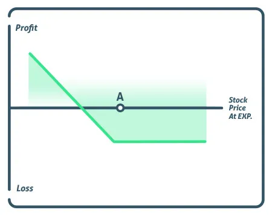

The long put options trading strategy offers an individual the right to sell an underlying stock at the specified price, point A, as listed on the graph. When the investor purchases a put option, he or she is betting that the stock will fall below the strike price before the expiration date. Using a put instead of shorting the stock reduces the risk to the investor as they can only lose the cost of the put, verses unlimited risk associated with shorting the stock.

If the stock rises, the long put option will expire worthless, and the investor will lose only the cost of the option. Likewise, an investor who shorted the stock will continue to lose more and more as the stock continues to climb higher. When purchasing puts, especially short term, there is a need for investors to be careful. If an investor buys many put contracts, their risk also increases. This is because the options can expire worthless, whereby the investor would lose the entire investment.
There are many reasons to buy put option contracts, these can be for speculative purposes, meaning the investor believes a stock price is going to fall. A long put can also be used as a hedge against stock already owned, to protect an asset if it’s to have a sudden turnaround in value, also known as a protective put.
Here if the stock that is already owned suddenly dropped, owning a put option would increase in value, offsetting the losses incurred from the stock.
For investors who want to take a bearish position in the stock, shorting the stock and buying put option contracts are the most popular strategies.
Shorting a stock is a risky endeavor, as a stock’s price can increase to infinity, which is why shorting a stock has unlimited risk. Buying a put is an alternative bearish strategy as an investor can only lose the cost of the put, so it’s risk is limited. Both of these strategies have limited profit potential, and gain value as the stock falls, but a stock can only fall until it reaches zero. But buying a put option is a way to capitalize on the downward movement in a stock while ensuring risk is limited to the premium paid for that option contract.
Maximum Loss = Net Premium Paid
The maximum gain for a long put strategy is unlimited as the stock can continue to move down gaining more and more value, at least until it reaches zero.
The breakeven on a long put option is calculated by subtracting the premium from the strike price.
If a stock is trading $100 and an investor wants to buy a 90-strike price put for $2.0, then the breakeven would be $88.00.
If stock XYZ is trading $100 and the investor thinks the stock is headed down, he may buy a 90-strike price put option for a $2. If the stock trades down to $85, they will make $5 on the 90 put, but because they paid $2 for the option, their net gain will be $3.
If, however, the stock continues to trade up or never trades down to $90, they will lose their $2 investment.
The long put is an investment practice that allows the investor to wager on the decline of the stock. The investor must be able to handle the potential loss of the entire premium if they are wrong. Whenever there is a decline in the underlying price, the traders can earn much more through puts ownership compared to short-selling. In short-selling, the risks are uncapped because there is a possibility of the stock price continuing to rise without any limits.